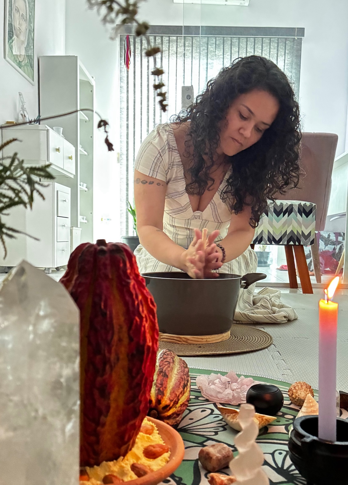

Um momento de meditação profunda e autoconexão, construído de forma individual para o que precisa ser olhado naquele dia.

A pessoa chega e prepara comigo o próprio cacau: aquece a água e participa da mistura exclusiva para aquele encontro. Esse gesto simples exige atenção e presença — justamente algo que muitas vezes não conseguimos encontrar na correria do cotidiano.
Enquanto preparamos, ela pode contar o motivo de estar ali. Às vezes, um desabafo simples já é necessário para que o corpo e a mente comecem a desacelerar.
O encontro é conduzido com presença, silêncio e elementos escolhidos de acordo com o momento da pessoa.
O preparo do cacau é feito junto, com atenção aos gestos, ao cheiro, à textura e ao próprio momento.
O cacau é tomado com música que conduz o processo meditativo. O doce do aroma e o amargo intenso do sabor podem colocar a pessoa diante de seus próprios contrastes.
Depois, voltamos a conversar. As sensações e percepções podem ganhar consciência e se transformar em reflexão para o cotidiano.
A quantidade de cacau é escolhida considerando diversos fatores pessoais da pessoa que está em atendimento. Não trabalho com uma quantidade única para todos.
Também podem ser acrescentadas especiarias escolhidas para acompanhar o assunto e o aspecto que está sendo trabalhado, dentro da proposta do encontro.
Após a tomada do cacau, existe uma meditação guiada escolhida especificamente para a pessoa e para o momento que ela está vivendo naquele dia.
O silêncio pode abrir espaço para percepções que não encontram lugar na rotina. Às vezes isso vem como tranquilidade; outras vezes, como emoção ou choro. Não existe uma resposta obrigatória para a experiência.
O cacau se torna um recurso para desacelerar e observar. O objetivo não é produzir uma experiência específica, mas criar condições para que a pessoa possa estar consigo mesma por um tempo que, muitas vezes, não consegue se oferecer.
Presencial em Sorocaba.
Para valores e disponibilidade, entre em contato.